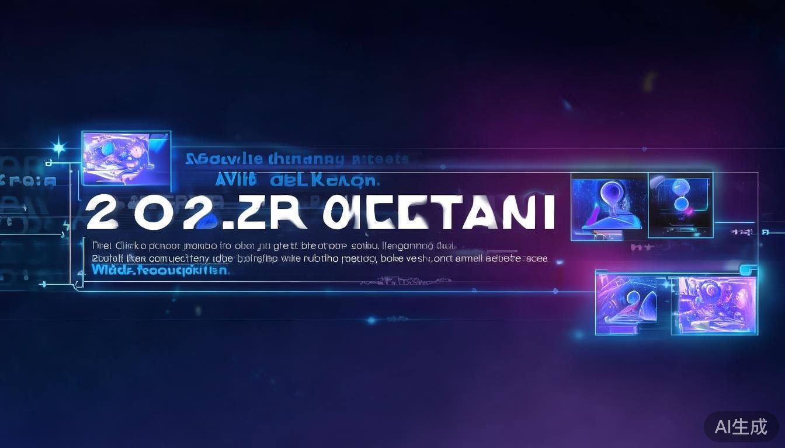

2026 年 AI 视频创作实战：从提示词到导演的完整工作流
视频创作的门槛正在从「技术」移动到「编排」。一年前卡住人的是会不会调参数、会不会装环境；现在卡住人的是「这条片子要讲什么、按什么顺序讲」。工具把下限抬高了，上限还是由人来定。
站在 2026 年 8 月的节点回望，AI 视频领域已经彻底告别了“初代混乱期”。如果说一年前大家还在争论 Sora 和 Runway 谁更强，那么现在的问题已经变成了“如何构建一个高效率、低成本的工业化视频生产流水线”。对于个人创作者和企业营销人员来说，掌握这套工作流不再是加分项，而是生存的必修课。
一、 工作流重构：从“提示词生成”转向“导演思维”
过去两年，我们过度神话了“提示词工程”，认为只要输入一段文字就能生成好莱坞级别的画面。但到了 2026 年，现实情况是：优秀的脚本和分镜逻辑，比单纯的提示词更能决定视频的质感。
1. 脚本即导演的蓝图
不要试图直接把一段长文丢给视频生成模型。现在的模型（如 Runway Gen 系列或 Sora）更适合处理“镜头语言”。你需要将脚本拆解为场景、运镜、主体动作三个维度。
- 场景拆解： 确定背景环境、光线方向（如“赛博朋克风格的雨天街道，霓虹灯倒影”）。
- 运镜指令： 明确摄像机运动，例如“推镜头”、“环绕拍摄”、“手持晃动”或“固定机位特写”。
- 主体动作： 描述角色的具体微动作，避免使用“一个人在走路”这种模糊描述，而应使用“穿着风衣的侦探在雨中停下脚步，点燃一根香烟”。
建议使用多模态大模型（如 GPT-6 Astra 或 Claude Opus 5.5）作为辅助，输入一个粗略的创意大纲，让它输出符合视频生成逻辑的镜头脚本表格。
2. 分镜的可视化预演
在生成最终视频前，必须先制作“分镜图”。利用 Midjourney 或 Stable Diffusion 的图生视频功能，将脚本转化为静态预览图。这不仅能让创作者提前感知画面质感，还能在拍摄前发现逻辑漏洞，避免后期大面积返工。
二、 控制的艺术：解决画面漂移与风格一致性

AI 视频最大的痛点依然是“漂移”——人物手指变形、背景物体突然消失或颜色突变。2026 年，控制技术已经成熟，我们需要学会使用“控制点”和“参考图”来锁死画面。
1. 图生视频（Image-to-Video）的精准控制
不要只依赖文字描述动作。使用参考图来固定主体和构图。在 Runway 或可灵（Kling）中，上传一张高质量的人物或物体参考图，并勾选“强参考模式”。同时，利用“控制点”工具在关键帧处标记出人物的肩膀、头部和手部位置。
实操技巧： 如果人物动作幅度过大导致肢体扭曲，可以采用“分段生成+遮罩合成”的策略。例如，只生成上半身动作，下半身保持静止，最后在后期剪辑中无缝拼接。
2. 局部重绘（Inpainting）修复瑕疵
即便是最先进的模型，偶尔也会出现面部崩坏。学会使用 Canvas 画布进行局部重绘。在生成后的视频帧中，圈出崩坏区域，重新输入提示词（如“高保真人脸，细节清晰”），模型会利用上下文信息智能修复，而不会破坏周围画面。
三、 音画合一：AI 配音与音效合成
很多创作者只关注画面，却忽略了音频，这直接导致视频的完成度大打折扣。在 2026 年，旁白和音效已经实现了全自动化生成。
1. 情感驱动的 AI 配音
传统的 TTS（文本转语音）早已过时。现在的 AI 配音工具（如 ElevenLabs 的最新版本）支持基于情感标签的生成。在脚本中标注“愤怒”、“悲伤”或“兴奋”，AI 会自动调整语速、停顿和音调，让旁白与画面情绪完美共振。
2. 环境音与 BGM 的智能匹配
不要使用通用的版权音乐。利用 AI 音频工具根据视频画面的节奏自动生成背景音。例如，当画面出现“飞船引擎启动”时，AI 会自动匹配低频的轰鸣声；当画面切换到“安静的图书馆”时，音量自动降低并混入翻书声。
3. 同步剪辑
现在的 AI 剪辑软件（如剪映 AI 2.0 或 Premiere Pro 内置的 AI 模块）具备“音频驱动剪辑”功能。上传视频片段，AI 会自动分析音频的强弱变化，推荐最佳的剪辑点和转场效果，大幅节省后期时间。
四、 变现路径：高产出内容的商业化策略
AI 视频创作的核心动力是效率。以下是目前最具可行性的变现方向：
1. SaaS 产品演示视频
对于科技初创公司，制作专业的产品演示视频成本极高。利用 AI，可以将枯燥的操作录屏转化为具有电影质感的动态演示。通过 AI 生成虚拟代言人讲解产品功能，成本仅为传统外包的 1/10，且修改极其灵活。
2. 微短剧出海
全球市场对短剧的需求激增。利用 AI 生成海量的剧本、分镜和视频素材，配合 AI 配音，可以快速批量生产“爽文”类短剧。虽然质量参差不齐，但通过算法投放，只要 ROI（投入产出比）为正，低成本的试错就是最大的优势。
3. 个性化教育内容
针对语言学习或职业技能培训，利用 AI 视频生成定制化的教学场景。例如，让 AI 生成“在巴黎街头问路”的场景，学生可以与 AI 生成的虚拟角色进行对话练习。
五、 行动建议：如何迈出第一步？
不要试图今天就把所有工具都学完。请遵循以下步骤开始你的 2026 年 AI 视频创作之旅：
- 选定一个垂直领域： 不要什么都做，专注于“科技评测”、“情感故事”或“知识科普”中的一个。
- 建立你的“提示词库”： 将常用的运镜指令、场景描述、人物形容词整理成 Excel 表格，作为生成模板。
- 本周完成一个 MVP（最小可行性产品）： 选定一个 30 秒的脚本，使用脚本工具生成分镜，用图生视频生成画面，用 AI 配音生成声音，最后在剪辑软件中合成。哪怕只有少数几个镜头是能用的，这也是实打实的进步。
- 订阅主流模型 API： 关注 OpenAI、Runway、Kling 等厂商的更新日志，第一时间测试新功能。
AI 视频创作不是魔法，而是一种新的生产力工具。当你开始用导演的思维去思考画面，用工程师的思维去优化流程时，你才能真正驾驭这个强大的工具。
出处声明
本文由 AI（智谱 GLM / 豆包 / DeepSeek）依据公开资讯辅助生成，内容以官方发布为准；如涉及具体数据、政策或产品细节，请以来源机构官方信息为准。本站不对因使用本文产生的决策后果负责。
出处声明：本页内容为白驹 ccowork原创，或已标注引用来源；改编内容遵循原始项目许可证（如 MIT / CC），不侵犯原作者权益。若引用内容涉及版权问题，请联系我们更正。